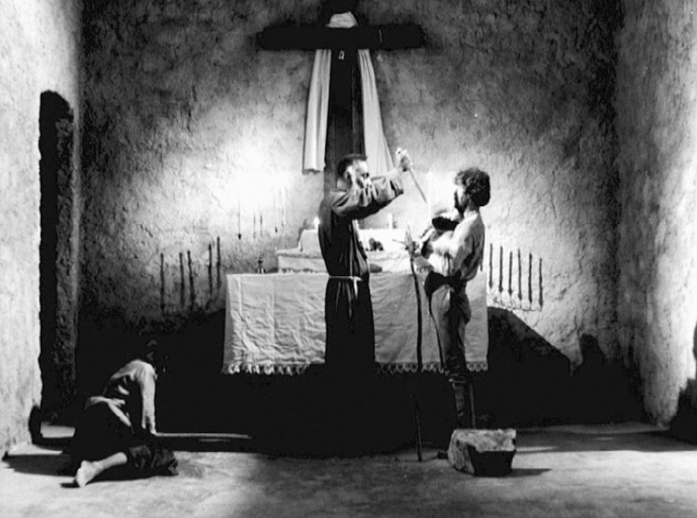
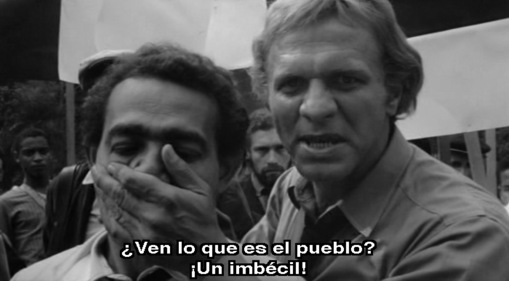

El cinema novo surge como una corriente de resistencia, sus antecedentes son complicados; en un inicio el cine en Brasil tiene a las chanchadas que es como el equivalente a las películas ficheras en México, pero a partir de 1950 se hace una búsqueda de películas hechas con mayor presupuesto, influenciados por la nueva ola francesa, se propone el elevar el nivel técnico de las películas, pero en un país empobrecido buscar la financiación de proyectos, era algo complicado, además de que para la economía del país no era conveniente seguirse endeudando. A partir de 1960 Joao Gaulart, como nuevo presidente propone impuestos a la clase alta, y reformas agrarias, para devolver tierras a los campesinos, lo cual generó descontento con la clase alta, convocando a marchas, una de ellas el 19 de marzo de 1964 en la que se llamaba a realizar un golpe de estado en contra del gobierno de Joao y el 31 de marzo sucede, el control militar y la toma del poder de los ricos; aquí es donde surge el Cinema Novo, los jóvenes cineastas crean un manifiesto cinematográfico en el que se oponen al cine industrial, proponen la búsqueda del cine autor y de crear consciencia social, pues la situación política era algo que les preocupaba, el nuevo gobierno los guiaría a un futuro, que ya no les pertenecía a ellos, por eso el cine debía ser en Brasil y para brasileños, querían construir la identidad del cine nacional, la identidad cultural con la que el pueblo se sintiera representado.
Como uno de los principales exponentes está Glauber Rocha, quien dice que “la función del cine es guiar hacia el conocimiento y no el mero entretenimiento, el cine es lenguaje, no un espectáculo”; el I. S. E. B., fue influencia para los cinemanovistas, quienes narraban historias desde la perspectiva social, cultural, económica, y política, ellos entendían la situación por la que pasaban en ese momento, en su discurso era prioridad generar consciencia de buscar el bienestar social, para crear políticas dirigidas a la realidad brasileña; el pueblo se encontraba en decadencia, en un país con deudas y que era dependiente de Estados Unidos, como muchos de los otros países latinoamericanos en aquella época. Glauber Rocha crea un manifiesto llamado “La estética del hambre”, en la que del hambre se haga poesía, se analice y se narre, sin caer en la pornomiseria. La censura de sus películas era su pan de cada día, pues estas se oponían a la ideología del gobierno y de quienes poseían el control de los medios de comunicación masiva (EUA), las películas producidas en esta época eran de bajo presupuesto, y de alto riesgo por la posibilidad de volverse presos políticos tras crear obras que se oponen a lo establecido.

